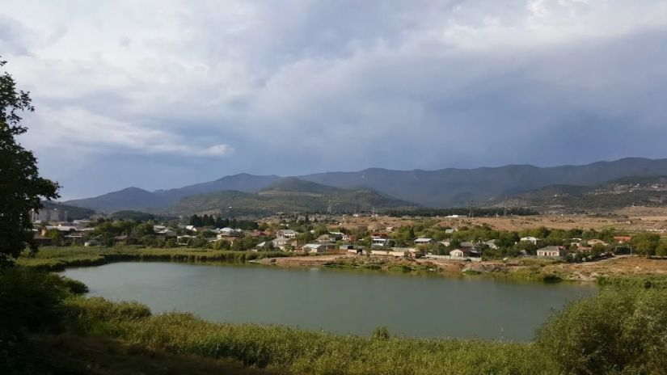
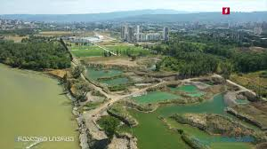
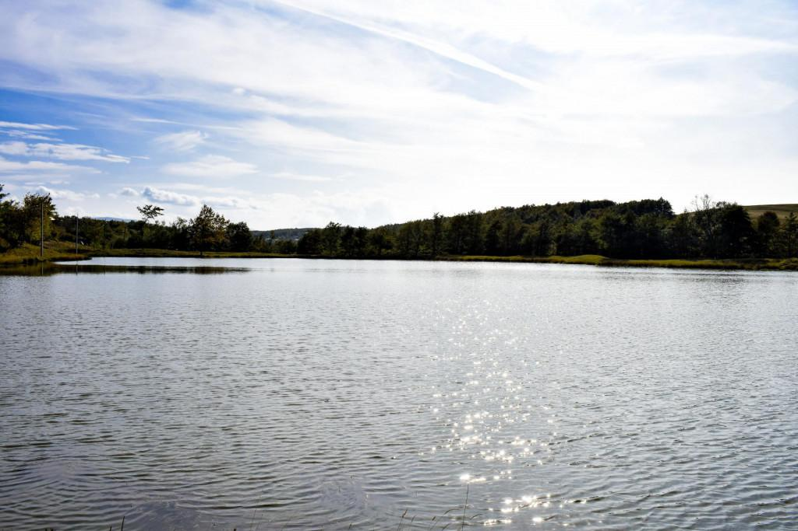
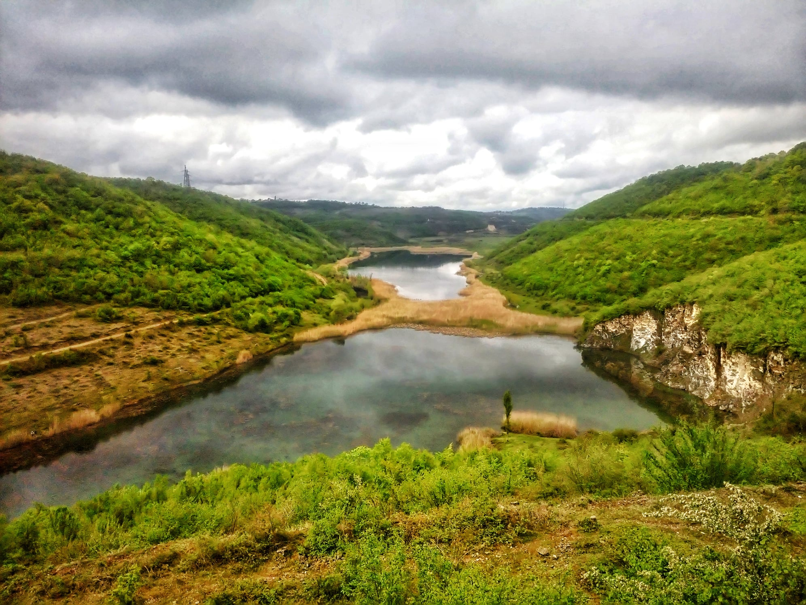
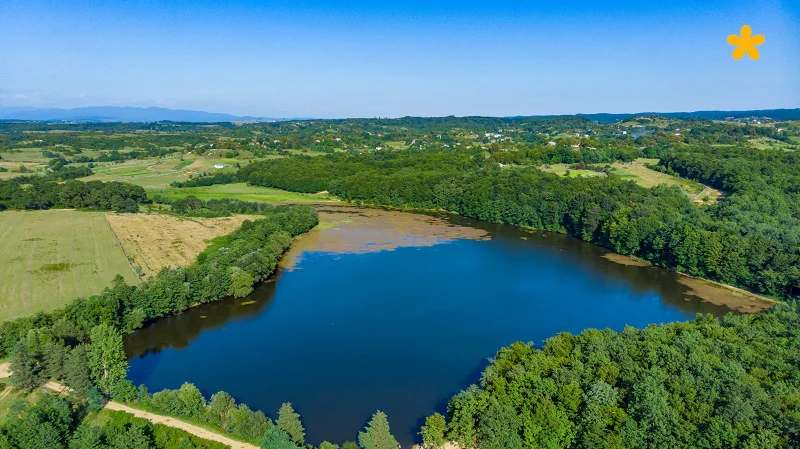
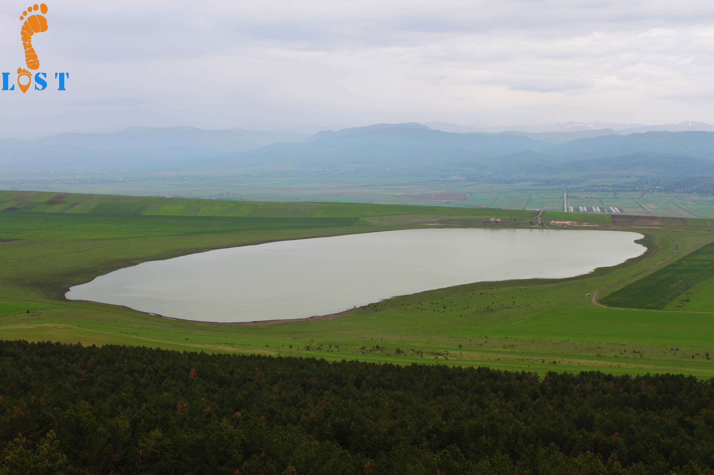

თბილისის ზღვა
ადგილმდებარეობა: თბილისი
ინფორმაცია: დედაქალაქში საუკეთესო განსატვირთი ადგილი, ვარდნაზე თევზაობით გასართობი
ბინადრები: კობრი, კარჩხანა, შამაია, ლოქო, ქარიყლაპია, ნაფოტა, კაპარჭინა, ქორჭილა და ჭანარი
საშუალო სიღრმე: 26 მ
ლოკაცია
ბაზალეთის ტბა
ადგილმდებარეობა: ბაზალეთი
ინფრომაცია: პრესტიჟული ადგილი, ფლეტ/მეთოდ ფიდერით გასართობი ადგილი.
ბინადრები: კობრი, კარჩხანა, ლოქო, ქარიყლაპია, ქორჭილა, სქელშუბლა, ამური და თეთრულა
საშუალო სიღრმე: 5 მ
ლოკაცია
სიონის წყალსაცავი
ადგილმდებარეობა: სიონი
ინფორმაცია: ულმაზესი კურორტი, ვარდნაზე თევზაობით გასართობი ადგილები
ბინადრები: კობრი, კარჩხანა, შამაია, ხრამული და ამური
საშუალო სიღრმე: 25 მ
ლოკაცია
გლდანის პატარა ტბა
ადგილმდებარეობა: თბილისი
ინფორმაცია: დედაქალაქში პატარა ჭაობის ტიპის წყალსაცავი, გამოირჩევა დიდი ზომის კარჩხანებით
ბინადრები: კობრი, კარჩხანა და ქორჭილა
საშუალო სიღრმე: 1 მ
ლოკაცია
დიღმის ჭალები
ადგილმდებარეობა: თბილისი
ინფორმაცია: მტკვრის სანაპიროზე განთავსებული პატარა ტბები, სასპინინგით გასართობი
ბინადრები: კობრი, კარჩხანა,ქარიყლაპია და ქორჭილა
საშუალო სიღრმე: 3 მ
ლოკაცია
უსახელოს ტბა
ადგილმდებარეობა: საჩხერის მუნიციპალიტეტი
ინფორმაცია: საჩხერის მუნიცპალიტეტში არსებული ხელოვნური ტბა, გმაოირჩევა დიდი ზომის ამურებით
ბინადრები: კობრი, კარჩხანა, ლოქო, და ამური
საშუალო სიღრმე: 1,5 მ
ლოკაცია
ღურღუმელას ტბა
ადგილმდებარეობა: ჭიათურის მუნიციპალიტეტი
ინფორმაცია: ჭიათურის მუნიციპალიტეტში არსებული ხელოვნური წარმოშობის ტბა, გამოირჩევა დიდი ზომის ეგზემპლაერბით
ბინადრები: კობრი, კარჩხანა, ქარიყლაპია, ქორჭილა და ამური
საშუალო სიღრმე: 10 მ
ლოკაცია
მანდაეთის ტბა
ადგილმდებარეობა: ჭიათურის მუნიციპალიტეტი
ინფორმაცია: ჭიათურის მუნიციპალიტეტში არსებული ულამაზესი ტბა, საკვებურებით გასართობი ადგილი
ბინადრები: კობრი, კარჩხანა, და ამური
საშუალო სიღრმე: 2 მ
ლოკაცია
ნადარბაზევის ტბა
ადგილმდებარეობა: გორის მუნიციპალიტეტი
ინფორმაცია: გორის მუნიციპალიტეტში მდებარე სპორტული ტბა, გამოირჩევა დიდი ზომის კობრებით
ბინადრები: კობრი, კარჩხანა და ამური
საშუალო სიღრმე: 3 მ
ლოკაცია